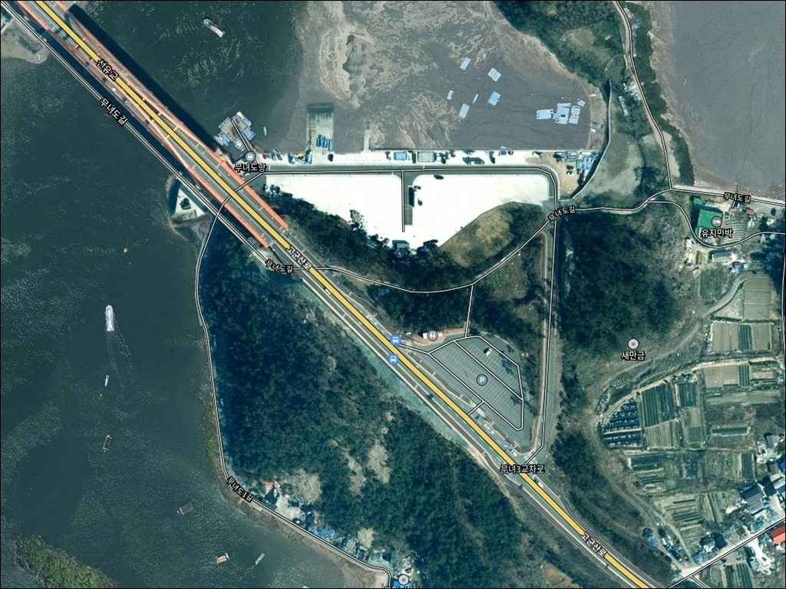
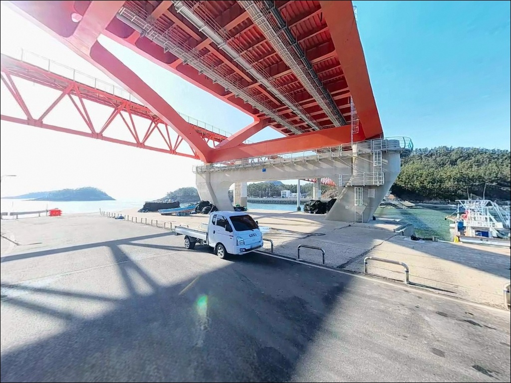
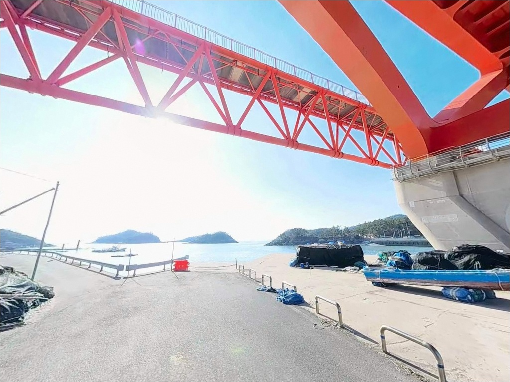
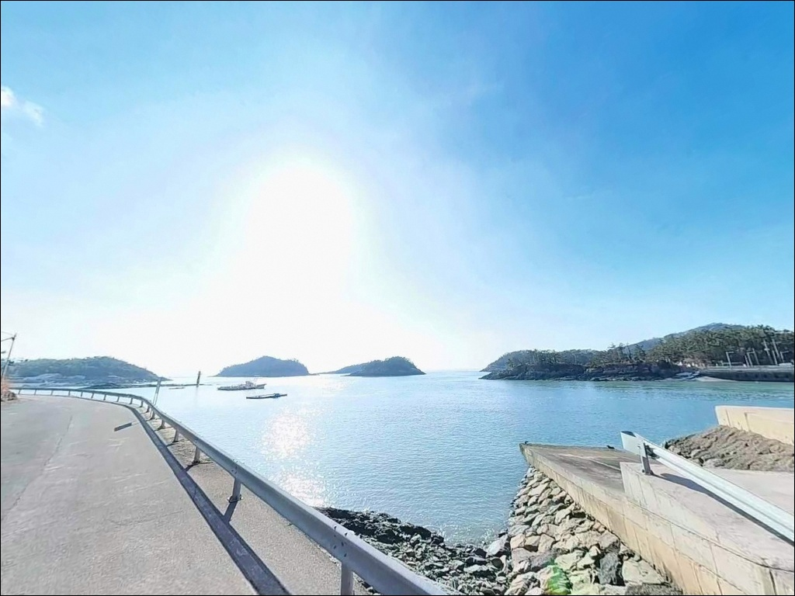
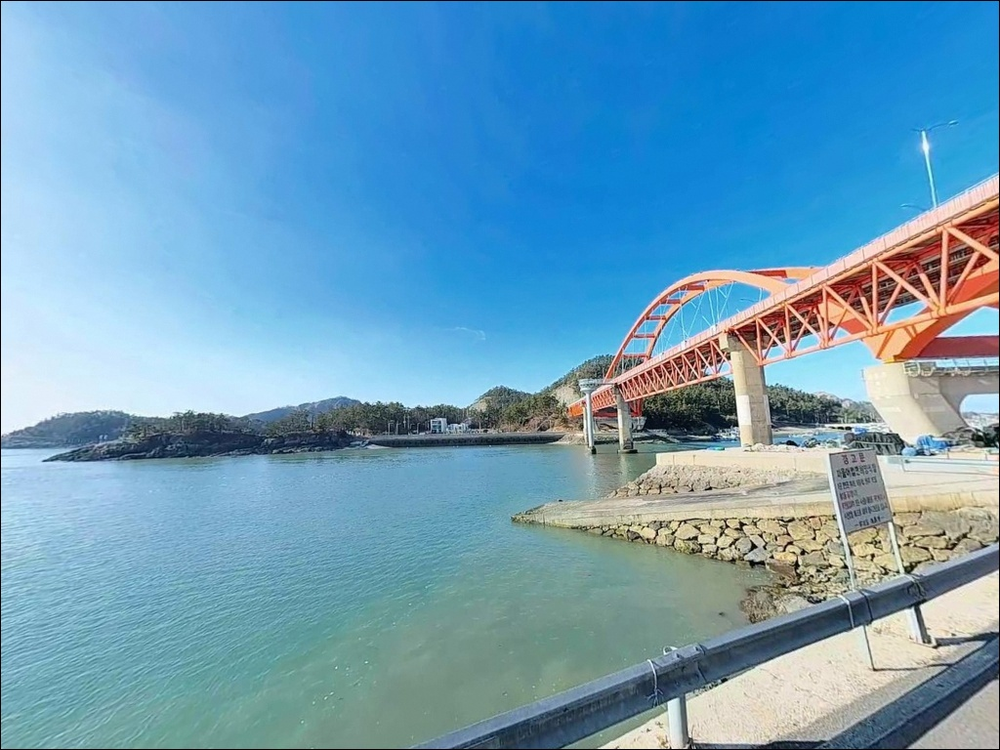
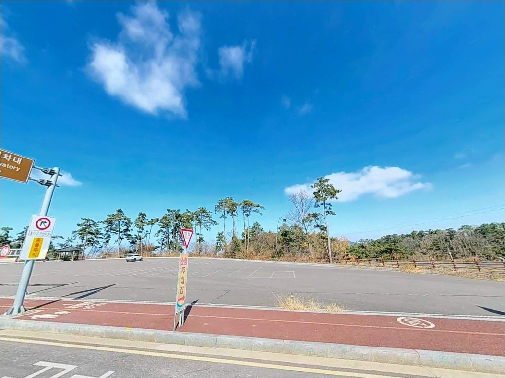
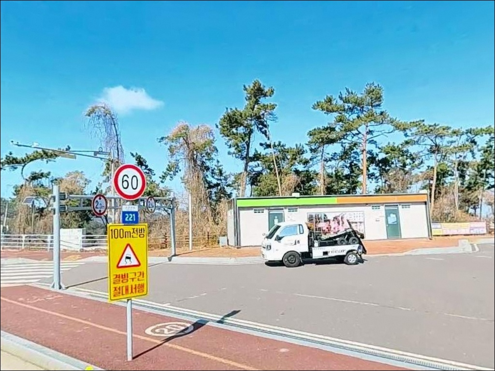
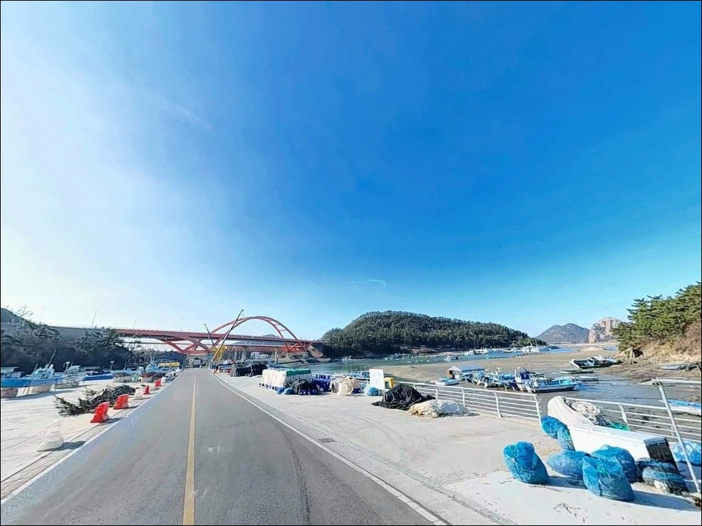
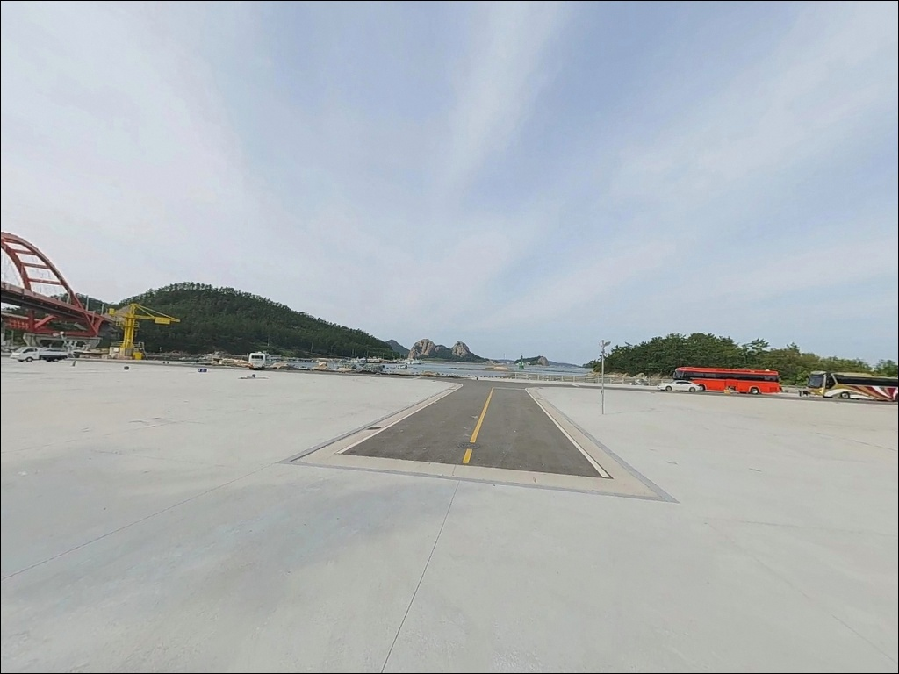

무녀도항, 무녀도 전북 군산시 고요함이 매력인 차박, 낚시 감성 장소
이 페이지에는 광고(제휴 링크 포함)가 있으며, 광고 링크를 통해 구매하면 운영자가 판매 수익 또는 수수료를 받을 수 있습니다. 포인트 사진: 카카오맵 스카이뷰·로드뷰. 이 페이지의 지도·사진 이미지는 카카오맵의 실제 서비스 이미지와 다를 수 있습니다.


포인트 안내
무녀도항
전북 군산시 옥도면 무녀도리 산 132
무녀도를 찾는 낚시인 중 적지 않은 수가
새만금 방조제 통행 시간 제한을 간과한 채 출발합니다.
이 구간은 하루 중 06:00~19:00에만 통행이 허용되어,
저녁 늦게까지 낚시하다 귀가하려 하면
방조제 앞에서 발이 묶이는 상황이 생깁니다.
야간 출조나 새벽 귀가를 계획하고 있다면
현행 통행 제한 시간을 출발 전에 다시 한번 확인하는 것이
이 포인트 방문의 첫 번째 준비입니다.
고군산군도 한가운데 자리한 무녀도항은
2003년 군산시 지방어항으로 지정된 정주어항으로,
고군산연결도로 개통 이후 차량으로 직접 들어갈 수 있게 됐습니다.
방파제와 선착장이 갖춰진 내항·외항 구조이며,
주변 섬 사이 조류가 활발히 흐르는
서해 도서형 바다낚시 포인트입니다.
이 글은 무녀도항의 진입 조건, 차박 여건, 물때와 조류 특성,
낚시 방식별 공략 구간에 집중합니다.
조황 단정이나 특정 어종 보장은 이 글의 범위에 포함되지 않습니다.

1. 포인트 위치 및 진입 동선 분석
군산 시내에서 무녀도항까지 가는 길은
새만금 방조제를 지나 신시도 방향으로 진입한 뒤,
고군산대교를 건너 무녀도로 이어지는 구조입니다.
연결도로 덕분에 차량 접근 자체는 무난하지만,
새만금 방조제 통행 시간이 06:00~19:00으로
제한되어 있다는 점이 핵심 변수입니다.
야간 귀가나 새벽 출조는 이 시간대 바깥에 해당하므로,
낚시 일정을 짤 때 반드시 먼저 계산해야 합니다.
무녀도 섬 내 도로는 폭이 좁은 구간이 있어
대형 차량이라면 초행에 서행이 필요합니다.
선착장 바로 앞 공간은 어민 작업 공간과 혼재되어 있어
주차 자리를 어선 동선과 겹치지 않게 잡는 것이
기본 매너입니다.
성수기와 주말에는 주차 경쟁이 심한 편이므로
평일 방문이나 조기 입장을 고려할 만합니다.
회차 공간은 선착장 주변으로 존재하며,
일반 승용차 기준으로는 회차가 가능한 편입니다.
단, 캠핑 트레일러나 대형 SUV를 운용한다면
진입 전에 위성지도로 항구 주변 구조를
한 번 확인하는 쪽이 안전합니다.

2. 차박 환경 평가 및 야간 체류 여건
무녀도는 오토캠핑장, 카페, 식당이 함께 있는
관광지화된 섬입니다.
선착장 주변에서 노지 차박을 시도하기에는
어민 작업 공간과의 혼재, 낮은 프라이버시,
성수기 관광객 유동량이라는 변수가 함께 작용합니다.
합법적이고 편의 측면에서 안정적인 대안은
무녀도오토캠핑장 이용입니다.
주소는 전북 군산시 옥도면 무녀도2길 19입니다.
야간 체류를 검토한다면 기상 변수를 먼저 살펴야 합니다.
고군산군도 해역은 안개가 자주 발생하고,
겨울철 대륙성 고기압 확장 시
돌풍이 급격히 불어오는 경우가 있습니다.
기상청 해상 예보를 출발 전과 현장 체류 중 모두 확인하고,
바람이 강해지는 조짐이 있으면 일찍 철수하는 편이 좋습니다.
어항 주변은 관광지 특성상 가로등이 일부 있어
완전한 암흑 환경은 아닙니다.
낚시 포인트 방면에서 외항 끝단 쪽은
조명이 부족할 수 있어
야간 헤드랜턴은 필수 장비입니다.


3. 주변 편의시설 및 인프라 현황
무녀도 내에 확인된 시설로는
카페 무녀2구마을버스가 있습니다.
전북 군산시 옥도면 무녀도동길 117에 위치하며
평일 09:00~19:30, 주말 09:00~20:00 운영하고
자체 주차장을 갖추고 있어
식음료와 간단한 휴식을 동시에 해결할 수 있습니다.
편의점, 마트, 주유소의 구체적인 운영 여부는
이 글에서 확인되지 않습니다.
섬 특성상 비응항 방면 군산 시내 인프라가
실질적인 보급 기점이 됩니다.
출발 전에 식수, 연료, 낚시 소품을 완비하고
진입하는 것이 현실적인 준비 방식입니다.
선유도 방향으로 선유대교를 건너면
편의 시설이 더 집중된 구간에 접근할 수 있습니다.
무녀도에서 여의치 않을 경우
선유도를 보급 동선으로 활용하는 방법도
고려할 만합니다.

4. 낚시 포인트 진입 전 반드시 챙겨야 할 준비사항
무녀도항 방문 전 가장 먼저 확인할 것은
두 가지입니다.
새만금 방조제 통행 시간과 물때입니다.
통행 시간은 실시간 변동 가능성이 있으므로
방문 당일 아침 재확인이 필요하고,
물때는 바다타임에서 무녀도 인근 기준으로
조류 세기와 정조 타이밍을 파악한 뒤
출발 시각을 역산하는 것이 기본입니다.
고군산군도 해역은 안개가 빈번하게 발생합니다.
기상청 해상 예보에서 시정 제한 여부를 확인하고,
서풍이 강하게 부는 날은
외항 방파제 끝단의 파도 변화가 급격해질 수 있어
기상 악화 전에 먼저 철수하는 판단이 필요합니다.
서해 얕은 수심 특성에 맞는 채비를 구성하고,
밑걸림이 있는 구간이 포함된 포인트이므로
여분 채비를 넉넉히 준비하는 편이 좋습니다.
방파제와 선착장은 어민 조업이 이루어지는 공간이므로
어선 동선과 어구 인근에는 채비를 던지지 않는 것이
기본 매너입니다.

5. 지형 기반 낚시 여건 분석
무녀도항은 내항과 외항이 구분된 방파제 구조의 지방어항입니다.
어항구역 면적이 약 50만 제곱미터로 상당히 넓은 편이며,
선착장과 방파제가 함께 갖춰져 있습니다.
내항 쪽은 수심이 낮고
모래와 펄이 섞인 바닥 구조로,
잔잔한 수면과 완만한 지형이 특징입니다.
외항 방파제 끝단은 섬 사이 수로를 통해
흘러오는 조류와 직접 맞닿는 구간입니다.
고군산군도 해역의 조류는 최강 유속이 약 2.6노트에 달하고,
창조류는 북동 방향, 낙조류는 남서 방향으로 흐르는 구조입니다.
섬과 섬 사이를 통과하면서 조류가 분리됐다 합류하는
복잡한 흐름이 형성되는 해역으로,
사리 전후에는 채비 컨트롤이 어려워지는 조건이 됩니다.
무녀도 남단 만자여·만여 일대는
보트 이동이 필요한 갯바위 포인트로,
선착장에서 직접 도보 접근은 어렵습니다.
선착장·방파제 도보 범위에서는
방파제 끝단과 섬 모퉁이 구간, 쥐똥섬 주변이
집중적으로 탐색할 만한 자리입니다.
최신 조황은 출조 전 반드시 검색해 보시기 바랍니다.
새만금 방조제 통행 시간이 06:00~19:00으로 제한되어
야간 귀가나 새벽 출조 계획은 반드시 일정에 반영해야 합니다.
이 변수를 빠뜨리면 낚시 여건이 좋아도
귀가 자체가 막히는 상황이 생깁니다.


6. 포인트에 어울리는 낚시 스타일
방파제 외항 끝단과 선착장 수로 입구에서는
원투낚시가 잘 맞는 구조입니다.
조류가 흐르는 구간에서 채비를 멀리 보내
바닥을 탐색하는 방식으로,
정조 타이밍에 채비를 안정시키는 것이 유효합니다.
서해 특성상 붕장어, 도다리, 양태 등
바닥 어종을 기대해볼 수 있는 지형입니다.
루어낚시는 외항 끝단과 갯바위 구간,
선착장 주변 수로 입구에서 운용할 수 있습니다.
고군산군도 전반에서 농어 조황이 있다는
후기들이 꾸준히 올라오는 해역으로,
미노우나 메탈지그를 이용한
조류 흐름에 맞춘 드리프트 방식도 시도해볼 만합니다.
라이트게임 채비로는 우럭·노래미를 노려볼 수 있습니다.
에깅과 주꾸미 낚시는 가을 시즌이 중심입니다.
내항 모래·펄 혼합 바닥과 암초가 섞인 구간은
갑오징어와 주꾸미가 서식하기 좋은 조건입니다.
군산 인근 해역 전반에서
가을 두족류 시즌이 활발하게 형성되는 패턴이 있어,
이 시즌에 집중적으로 탐색해볼 만합니다.
찌낚시는 내항 선착장 주변처럼
파도가 잠잠하고 수심이 완만한 구간에서
운용하기에 어울리는 방식입니다.
서해 내만 특성상 수심이 낮은 편이므로
채비 길이 조절이 우선입니다.

7. 대안 포인트 및 플랜 B 동선
무녀도항 자리 여건이 여의치 않거나
주차 공간 확보가 어려울 때
가장 먼저 이동할 수 있는 곳은
선유도항 방파제입니다.
선유대교로 연결되어 차량 이동이 바로 가능하고,
무녀도보다 외항 구조가 더 넓어
복수 낚시 방식을 운용하기 좋은 조건입니다.
고군산군도 가장 외측 끝단에 있는 장자도항은
조류가 더 강하고 수심 변화가 큰 구간으로
대물을 기대하는 낚시인들이 선호하는 포인트입니다.
고군산연결도로를 따라
무녀도에서 장자도까지 차량으로 이동할 수 있어
같은 날 두 곳을 함께 탐색하는 동선도 현실적입니다.
신시도항은 고군산대교 초입 쪽에 위치해
진입과 주차 여건이 상대적으로 안정적입니다.
무녀도항이 성수기 주차난으로 여의치 않을 경우
신시도항을 기점으로 삼아 동선을 조정하는
방법도 고려할 수 있습니다.

물때와 통행시간, 두 가지만
맞추면 무녀도항은
든든한 출발점이 됩니다
방파제·선착장 도보 낚시로 원투, 루어, 에깅을
복수로 운용하고 싶은 낚시인이라면
무녀도항의 내항·외항 구조는
잘 맞는 조건입니다.
고군산군도 해역 특유의 강한 조류와
섬 사이 복잡한 흐름이 어우러지는 곳으로,
물때를 이해하고 입장하면
방파제 끝단에서 채비 반응이 달라지는 경험을
할 수 있는 포인트입니다.
반면 통행 시간 제한과 성수기 주차난을
계산하지 않고 방문하면
낚시 여건과 무관하게 이동 자체가 불편해집니다.
새만금 방조제 06:00~19:00 통행 시간,
물때 확인, 기상 예보, 자급 준비,
이 네 가지를 갖추고 출발하면
고군산군도 서해 낚시의 시작점으로
기억에 남는 포인트가 될 수 있는 곳입니다.
낚시를 마치고 무녀도에서 하룻밤 머물 계획이라면
무녀도오토캠핑장을 기점으로 삼고
아침 일찍 방파제 포인트로 나서는 방식이
이 섬에서 낚시와 차박을 함께 즐기는
가장 효율적인 동선입니다.